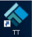
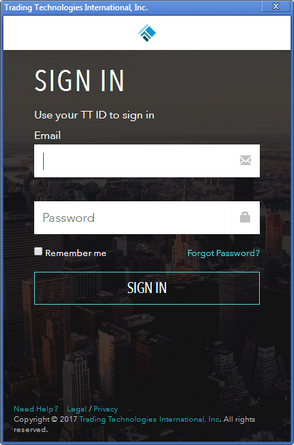
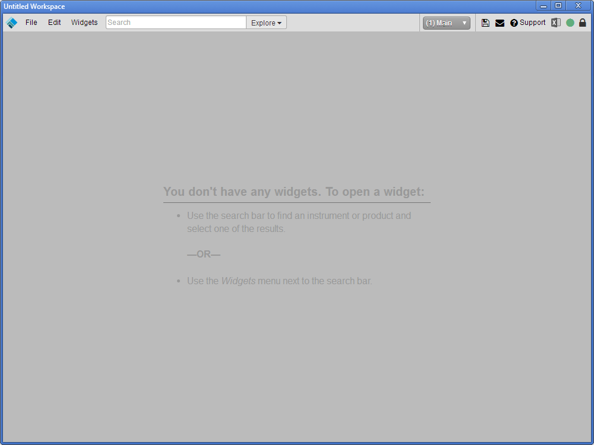

To log in to TT Desktop:
Double-click the Trading Technologies icon () on your desktop.

Enter your TT ID and password, and click SIGN IN. If you want to pre-fill the Email feed in the future, check Remember me.
TT Desktop automatically opens the Main window of a new workspace the first time you use TT Desktop. Subsequently, it opens the workspace windows that were open the last time you closed TT Desktop.

To log out of TT Desktop, close the main workspace window.